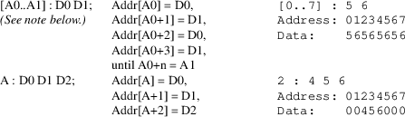

srec_mif - Memory Initialization File (MIF) format
This format was invented by Altera.
An ASCII text file (with the extension .mif) that specifies the initial content of a memory block (CAM, RAM, or ROM), that is, the initial values for each address. This file is used during project compilation and/or simulation. You can create a Memory Initialization File in the Memory Editor, the In-System Memory Content Editor, or the Quartus II Text Editor.
A Memory Initialization File serves as an input file for memory initialization in the Compiler and Simulator. You can also use a Hexadecimal (Intel-Format) File (.hex) to provide memory initialization data.
A Memory Initialization File contains the initial values for each address in the memory. A separate file is required for each memory block. In a Memory Initialization File, you must specify the memory depth and width values. In addition, you can specify data radixes as binary (BIN), hexadecimal (HEX), octal (OCT), signed decimal (DEC), or unsigned decimal (UNS) to display and interpret addresses and data values. Data values must match the specified data radix.
When creating a Memory Initialization File in the Quartus II Text Editor, you must start with the DEPTH, WIDTH, ADDRESS_RADIX and DATA_RADIX keywords. You can use Tab "" and Space " " characters as separators, and insert multiple lines of comments with the percent "%" character, or a single comment with double dash "--" characters. Address:data pairs represent data contained inside certain memory addresses and you must place them between the CONTENT BEGIN and END keywords, as shown in the following examples.
% multiple-line comment
multiple-line comment %
-- single-line comment
DEPTH = 8; -- The size of data in bits
WIDTH = 32; -- The size of memory in words
ADDRESS_RADIX = HEX; -- The radix for address values
DATA_RADIX = BIN; -- The radix for data values
CONTENT -- start of (address : data pairs)
BEGIN
00 : 00000000; -- memory address : data
01 : 00000001;
02 : 00000010;
03 : 00000011;
04 : 00000100;
05 : 00000101;
06 : 00000110;
07 : 00000111;
08 : 00001000;
09 : 00001001;
0A : 00001010;
0B : 00001011;
0C : 00001100;
END;
There are several ways to specify the address and data, as seen in the following table:

Note: The address range forms are limited in SRecord, the range must be less than 255 bytes. SRecord will never write an address range.
Note: When reading MIF file, SRecord will round up the number of bits in the WIDTH to be a multiple of 8. Multi-byte values will be laid down in memory as big-endian.
An ASCII text file (with the extension .mif) that specifies the initial content of a memory block (CAM, RAM, or ROM), that is, the initial values for each address. This file is used during project compilation and/or simulation. A MIF contains the initial values for each address in the memory. In a MIF, you are also required to specify the memory depth and width values. In addition, you can specify the radixes used to display and interpret addresses and data values.
In general, binary data will expand in sized by approximately 3.29 times when 8-bit data is represented with this format (16 bit = 2.75, 32 bit = 2.47, 64 bit = 2.34).
Following is a sample MIF:
DEPTH = 32; % Memory depth and
width are required %
% DEPTH is the number of addresses %
WIDTH = 14; % WIDTH is the number of bits of data per word %
% DEPTH and WIDTH should be entered as decimal numbers %
ADDRESS_RADIX = HEX; % Address and value radixes are
required %
DATA_RADIX = HEX; % Enter BIN, DEC, HEX, OCT, or UNS; unless
%
% otherwise specified, radixes = HEX %
--Specify values for addresses, which can be single address
or range
CONTENT
BEGIN
[0..F]: 3FFF; % Range: Every address from 0 to F = 3FFF %
6 : F; % Single address: Address 6 = F %
8 : F E 5; % Range starting from specific address %
-- % Addr[8] = F, Addr[9] = E, Addr[A] = 5 %
END;
The above
information was gleaned from the following sources:
http://www.altera.com/support/software/nativelink/quartus2/glossary/def_mif.html
http://www.mil.ufl.edu/4712/docs/mif_help.pdf
srec_mif
version 1.65
Copyright (C) 1998, 1999, 2000, 2001, 2002, 2003, 2004,
2005, 2006, 2007, 2008, 2009, 2010, 2011, 2012, 2013, 2014,
2018, 2019, 2022 Peter Miller
The srec_mif program comes with ABSOLUTELY NO WARRANTY; for details use the ’srec_mif -VERSion License’ command. This is free software and you are welcome to redistribute it under certain conditions; for details use the ’srec_mif -VERSion License’ command.